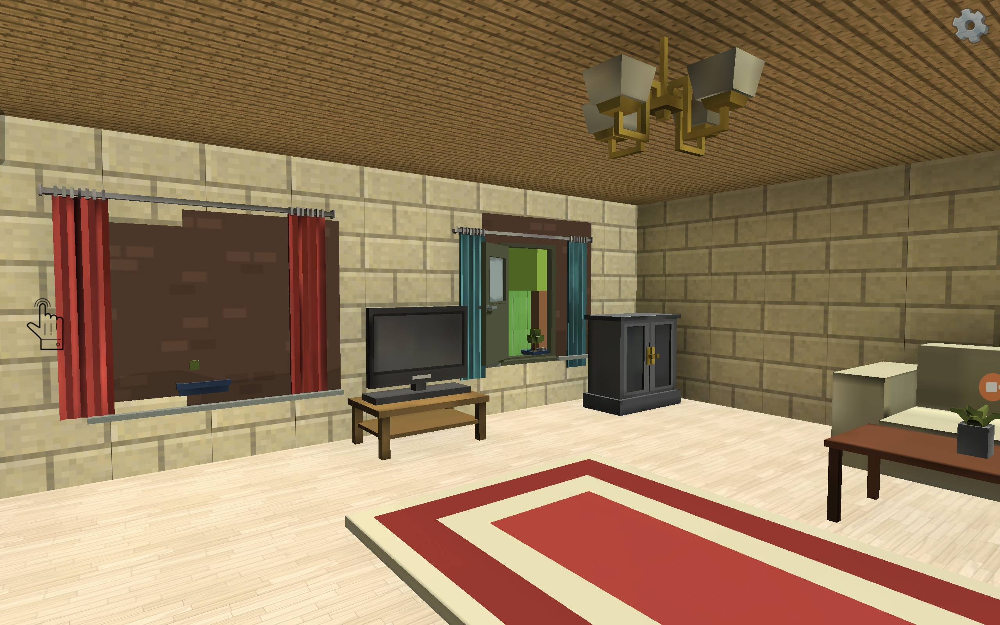

# FNAF-chicken
Устройство планшет телефоне или ПК в управлении W позволяет закрыть дверь и пробел позволяет посмотреть камере
<!DOCTYPE html>
<html>
<head>
<meta charset="UTF-8">
<title>FNAF Chicken</title>
<style>
body { background:black; color:white; text-align:center; font-family:Arial; }
#screen { width:95%; max-width:500px; border:4px solid white; margin-top:20px; }
button { font-size:18px; margin:10px; padding:10px 20px; }
#menu { margin-top:50px; }
</style>
</head>
<body>

<div id="menu">
<h1>FNAF Chicken</h1>
<p>Выберите устройство:</p>
<button onclick="chooseDevice('pc')">ПК</button>
<button onclick="chooseDevice('phone')">Телефон</button>
</div>

<div id="game" style="display:none">
<h3>Энергия: <span id="power">100</span>%</h3>
<h3>Время: <span id="time">0</span> / 8 часов</h3>
<br>
<button onclick="door()">Дверь</button>
<button onclick="camera()">Камера</button>
</div>

<script>
let device = "pc"; 
let power = 100;
let time = 0; 
const nightDuration = 8; 
let doorClosed = false;
let cam = false;
let gameRunning = false;

let chicken = false;
let chickenVisible = false;
let chickenInOffice = false;

// Выбор устройства
function chooseDevice(d) {
  device = d;
  if (device === "phone") {
    document.body.style.fontSize = "22px"; 
    document.getElementById("screen").style.width = "100%"; 
  } else {
    document.body.style.fontSize = "16px";
    document.getElementById("screen").style.width = "500px";
  }
  document.getElementById("menu").style.display = "none";
  document.getElementById("game").style.display = "block";
  gameRunning = true;
  updateScreen();
}

// Дверь для планшета
function door() {
  if (!gameRunning) return;
  doorClosed = !doorClosed;
  power -= 0.1; 
  updateScreen();
}

// Камера
function camera() {
  if (!gameRunning) return;
  cam = !cam;
  power -= 0.1;
  updateScreen();
}

// Обновление экрана
function updateScreen() {
  if (cam && chicken) {
    document.getElementById("screen").src = "cam_chicken.jpg";
  } else if (!cam) {
    if (chickenInOffice) {
      document.getElementById("screen").src = "chicken_door.jpg";
    } else {
      document.getElementById("screen").src = doorClosed ? "door_closed.jpg" : "door_open.jpg";
    }
  }
}

// Управление на ПК
document.addEventListener("keydown", function(e) {
  if (!gameRunning) return;
  if (device === "pc") {
    if (e.key === "w" || e.key === "W") {
      doorClosed = true;
      power -= 0.1;
      updateScreen();
    } else if (e.key === " ") {
      doorClosed = false;
      power -= 0.1;
      updateScreen();
    }
  }
});

// Основной игровой цикл
setInterval(function() {
  if (!gameRunning) return;

  // Плавная энергия
  if (power > 0) power -= 1;
  if (power < 0) power = 0;
  document.getElementById("power").innerText = Math.floor(power);

  // Время ночи
  time += 0.05; 
  document.getElementById("time").innerText = time.toFixed(2);

  if (time >= nightDuration) {
    alert("Утро! Ты выжил!");
    location.reload();
  }

  // Появление курицы
  if (Math.random() < 0.35 && !chickenVisible) {
    chicken = true;
    chickenVisible = true;

    if (doorClosed) {
      chickenInOffice = false;
      updateScreen();
      setTimeout(() => { chickenVisible = false; chicken = false; }, 7000);
    } else {
      chickenInOffice = true;
      updateScreen();
      setTimeout(() => {
        if (!doorClosed && !cam) {
          alert("Курица поймала тебя!");
          location.reload();
        } else {
          chicken = false;
          chickenVisible = false;
          chickenInOffice = false;
          updateScreen();
        }
      }, 7000);
    }
  }

  updateScreen();

}, 10000); 

</script>
</body>
</html>
